Peter
Peter 是北航Toastmasters历史上举足轻重的人物。在俱乐部的早期编年史里，他被列入历任主席的谱系——"从教父Wesley时代的白手起家，到Peter时代的苦心经营，再到Doris时代、现任Sophie的欣欣向荣"，可见他是把这个年轻俱乐部从草创带向成熟的奠基者之一。后来的纪要也直接称他为"The former President of Beihang Toastmasters"。
作为会员，他几乎是"劳模"般的存在。在一次官方公布的成员角色统计中，Peter以5次担纲位居榜首（TM两次、TTM、TTE以及CC5），是俱乐部里承担角色最多的人。翻看2014年那一长串会议预告，主持人(Toastmaster)一栏几乎被他刷屏：第50、52、57、60、64、78届……他还做即兴主持(TTM)、点评官(Evaluator)、总点评(GE)，并担任2014秋季演讲比赛的Contest Chair。他乐于把经验传给新人，曾专门做过一次关于如何当好计时员、哼哈官、语法官的分享(Lecture: "No, Big Deal!")。
他的备稿演讲一路走完了CC的多个阶段：CC2《Don't hate what you don't know》、CC5《Never wait until it is too late》、CC6《A Better World》、CC7《Mind Your Labels》——题目都偏思辨，纪要里反复称他"a thoughtful and humorous speaker who can always bring us new and suggestive ideas"，是个"rare thinker"。2016年他又以CC1《Survive the Hopelessness》重新出现在舞台上，仿佛带着新一轮的热情归来。会员们记得他的标志：标准英音一开口就"俘获众多女性会员芳心"、爱读书、一手漂亮的字、还有一只叫多多(Duoduo)的哈士奇。
在比赛舞台上，他同样耀眼。2016秋季比赛后，他拿下小区(Area)英文幽默演讲第三名和评论比赛第二名，是俱乐部"史上最豪华阵容"里的男神之一；俱乐部纪要里他常常被评为"最佳即兴演讲"。从主席到段子手、从思想者到表演者，Peter把北航头马当作真正的舞台，也把自己活成了这个舞台上最难忘的名字之一。
闯关之路 · Competent Communication
做过的演讲 · 5 场
担任过的职责
里程碑
- 2014-03-07 活跃于主持台第50届起密集担任Toastmaster，成为当时最活跃的核心成员。
- 2014-04-08 角色贡献榜第一官方成员角色统计中以5次担纲(TM×2、TTM、TTE、CC5)位列全club第一。
- 2014-09-05 出任秋季比赛主席担任2014 Autumn Speech Contest的Contest Chair。
- 2014-10-10 完成CC7并面临人生抉择以'前主席、资深读者'身份做CC7《Mind Your Labels》，正处求职十字路口。
- 2016-07-15 带着CC1重返舞台以CC1《Survive the Hopelessness》再度登台，仿佛新一轮起跑。
- 2016-09-05 秋季比赛获奖小区比赛中获英文幽默演讲第三名、评论比赛第二名。
为俱乐部做的事
- 作为早期主席之一，'苦心经营'把北航头马从草创带向成熟。
- 长期高频担任Toastmaster主持，是会议运转的中坚力量。
- 多次担任即兴主持、点评官与总点评，帮助新老演讲者成长。
- 出任2014秋季幽默演讲比赛主席，组织比赛。
- 做经验分享(Lecture 'No, Big Deal!')，教大家如何当好计时员、哼哈官、语法官等功能角色。
- 在比赛中为俱乐部争得荣誉(英文幽默演讲第三、评论第二)，是'最豪华阵容'中的男神。
照片墙 · 时间线
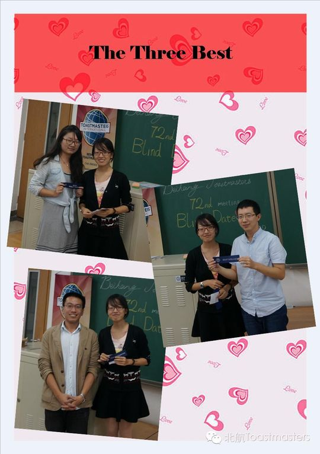
✓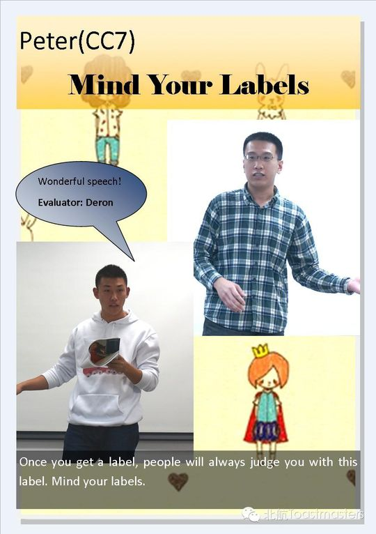
✓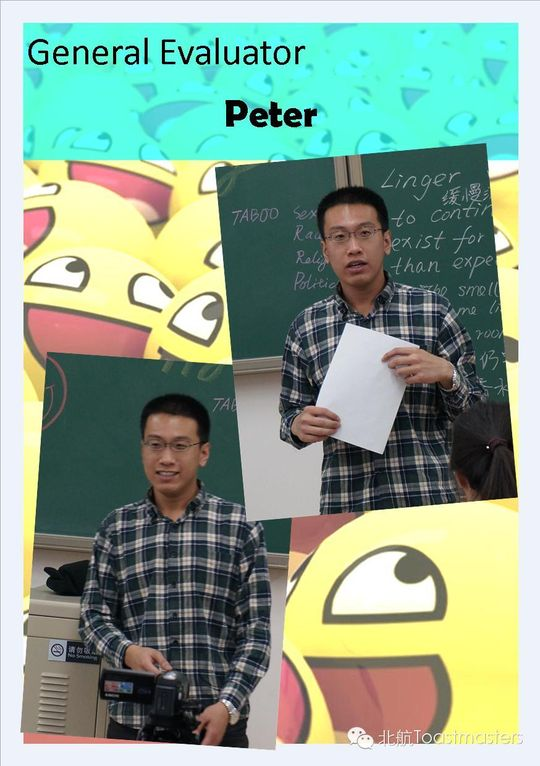
✓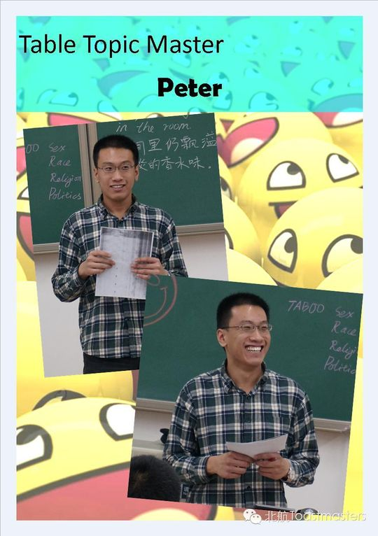
✓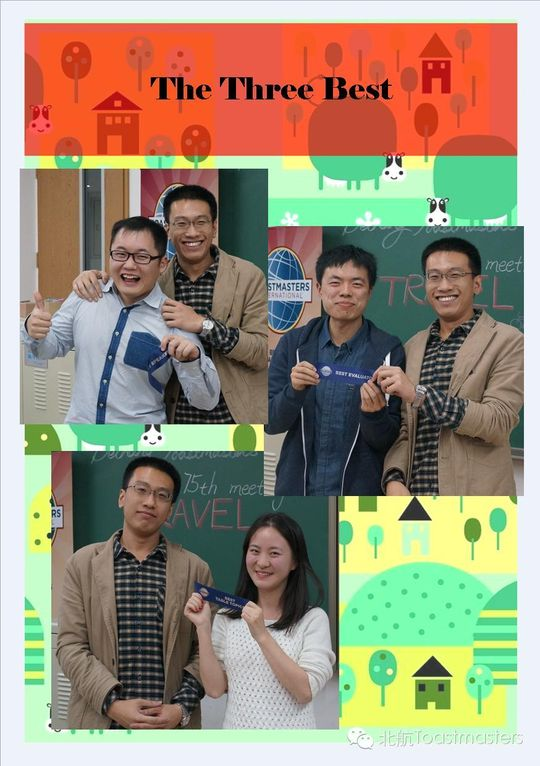
✓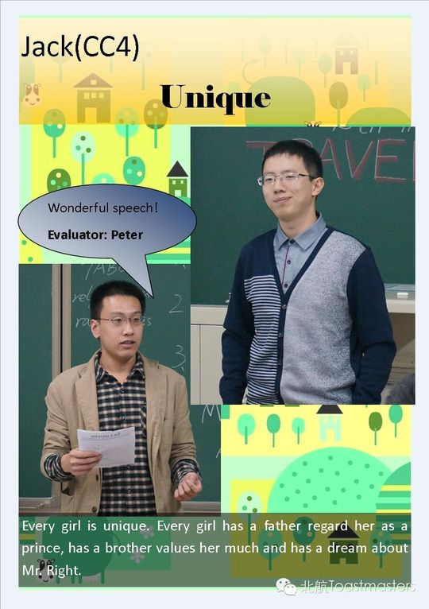
✓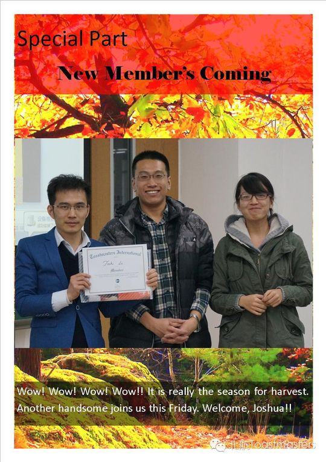
✓ ✓
✓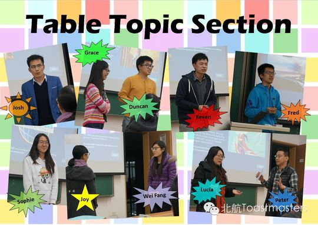
✓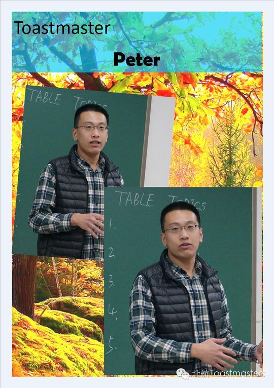
✓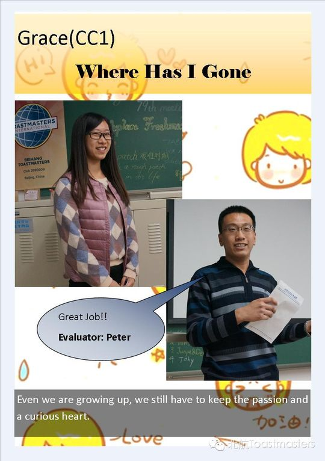
✓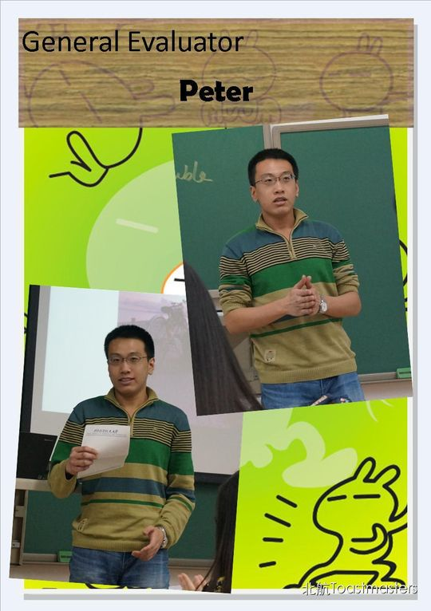
✓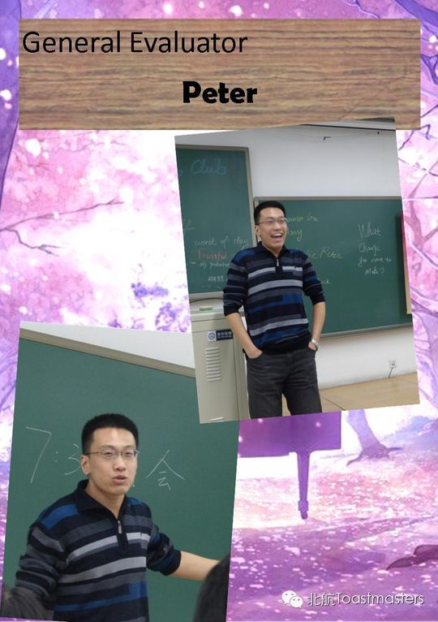
✓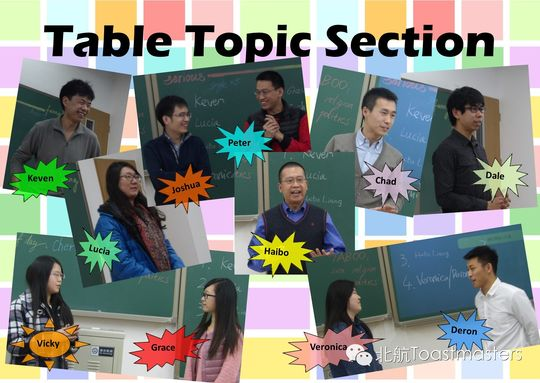
✓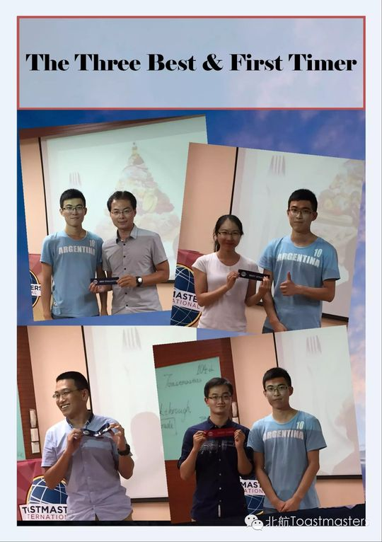
✓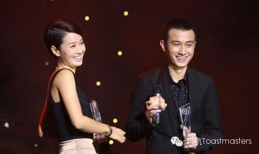
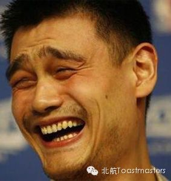
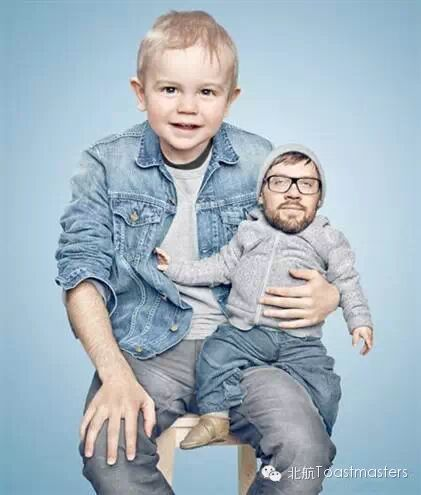
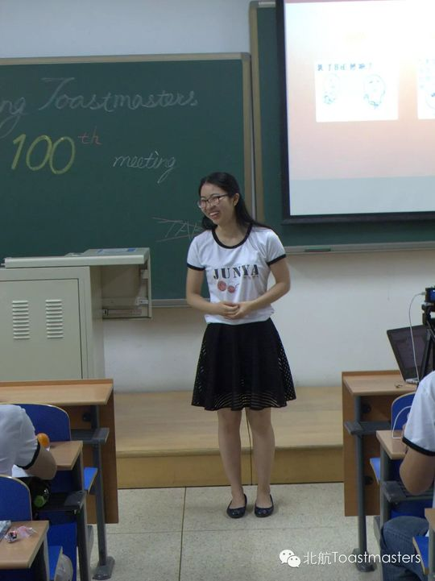
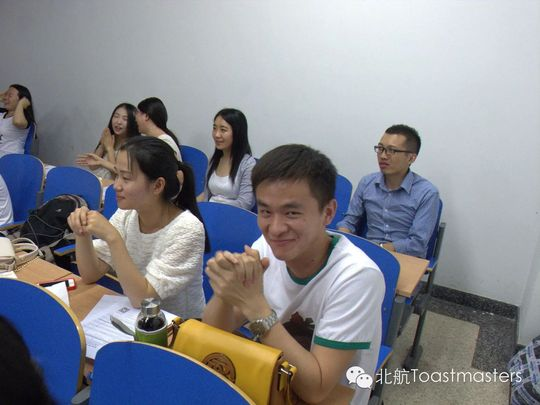
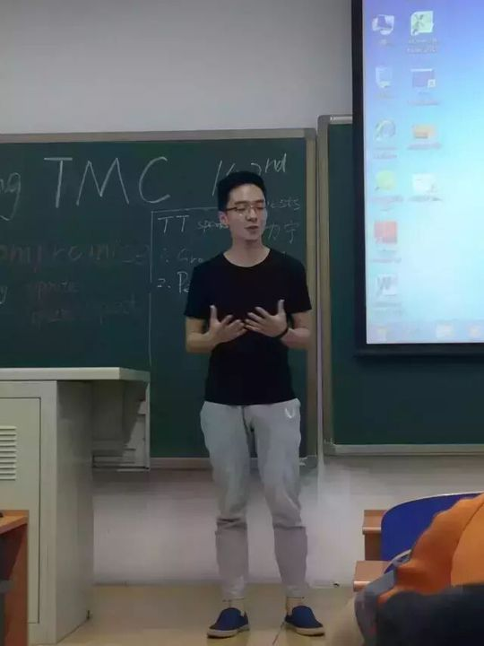
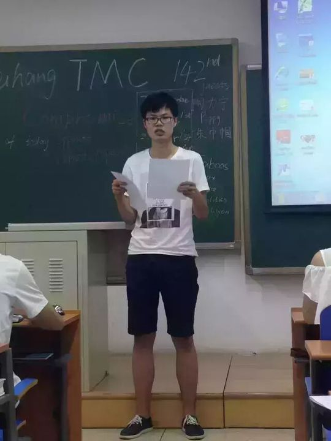
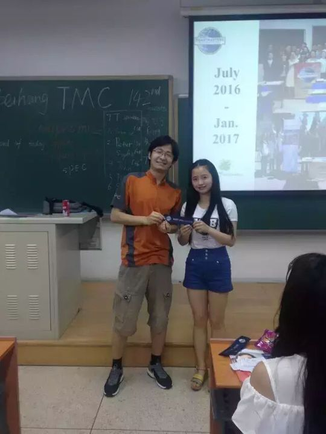
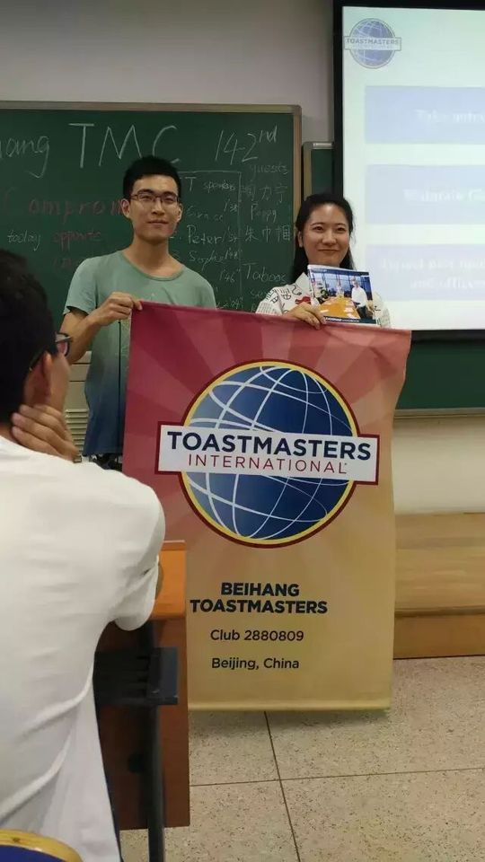
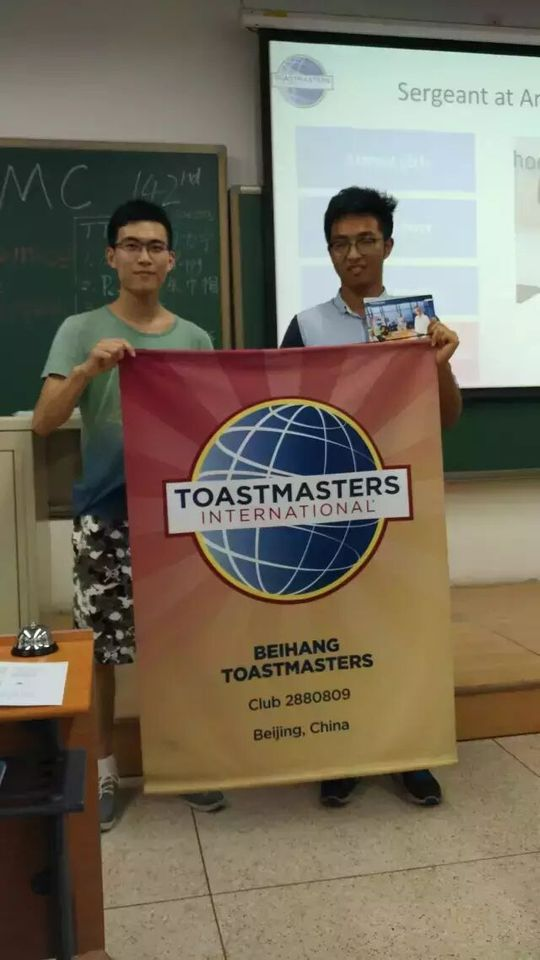
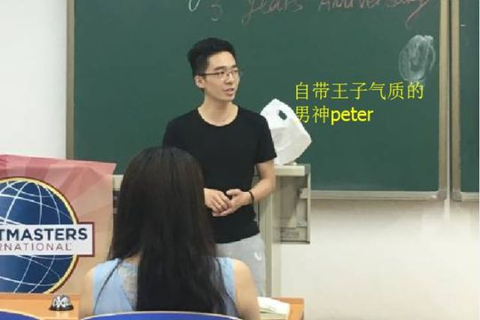
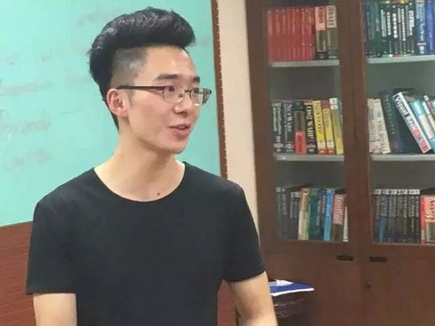
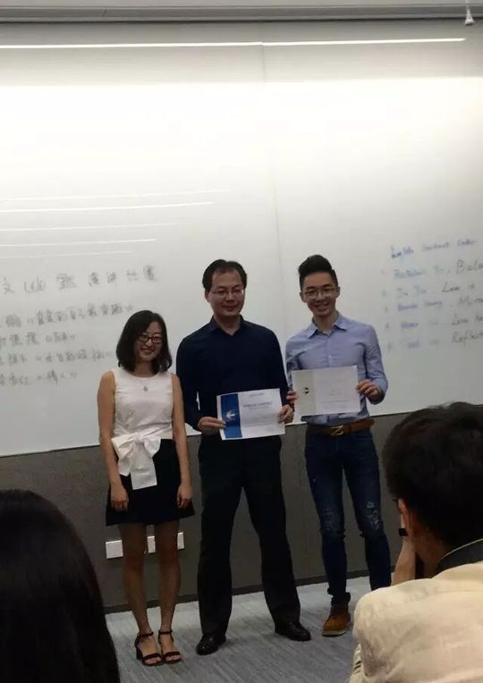
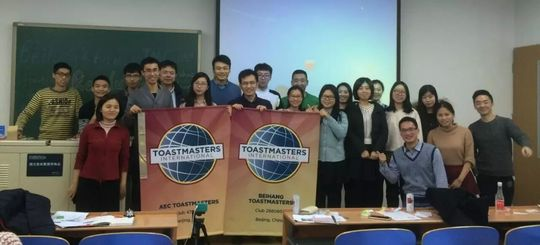
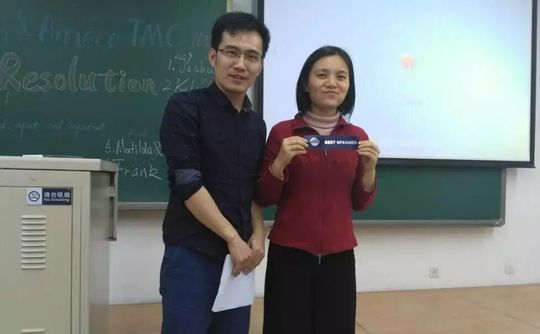